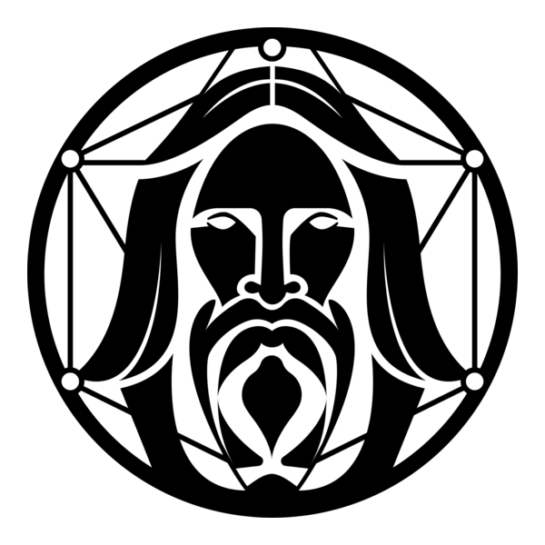
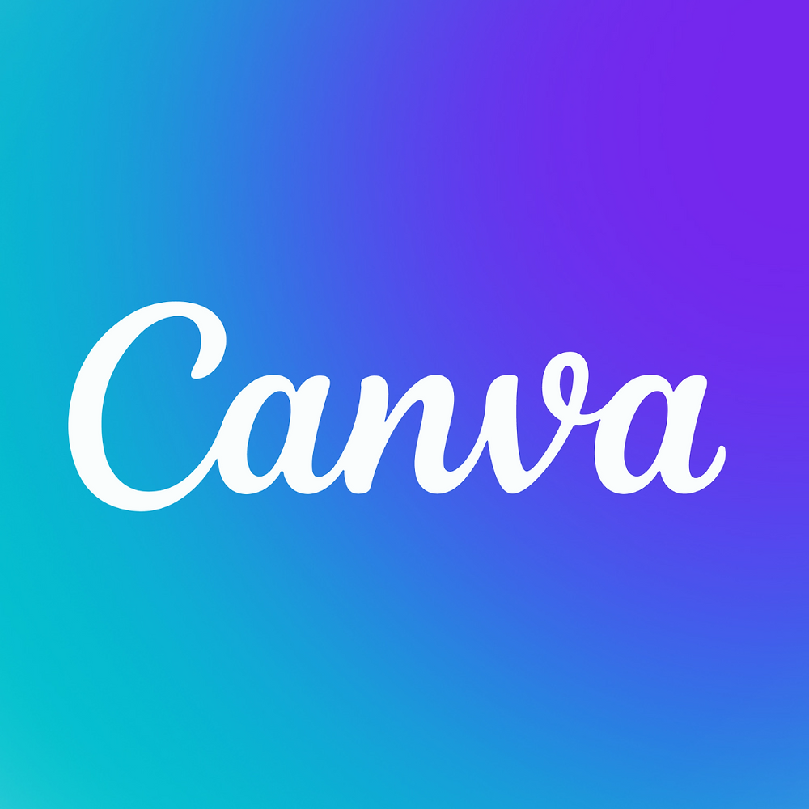
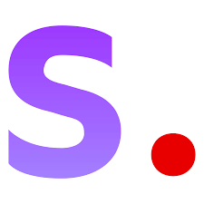
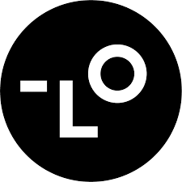
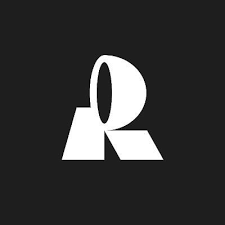

Midjourney
Gerador de arte e imagens realistas através de prompts de texto no Discord.
Visitar siteExplore 17 ferramentas da categoria Imagem do The AI Stackies. Encontre opções para gerar ilustrações, editar fotografias, preparar peças de design e converter imagens em vetores.
Comece pela tarefa que você deseja realizar: criar uma imagem a partir de texto, editar uma fotografia, produzir materiais visuais de marketing ou transformar uma imagem em vetor. As ferramentas abaixo têm propostas diferentes; confira seus sites oficiais para entender condições de acesso, licenças e funcionalidades atuais.
Gerador de arte e imagens realistas através de prompts de texto no Discord.
Visitar site
Focado em assets para jogos e design com controle fino.
Visitar site
Suíte de IA integrada ao Canva para designers.
Visitar site
Modelo open-source que roda no seu PC. Liberdade total.
Visitar siteO gerador de imagens da OpenAI, integrado ao ChatGPT.
Visitar siteIA generativa da Adobe, segura para uso comercial.
Visitar siteTransforma imagens JPG/PNG em vetores (SVG) infinitos.
Visitar siteGera páginas de livros de colorir personalizadas.
Visitar siteCriação e edição de conteúdo visual, especialmente vídeos e imagens.
Visitar siteAI para facilitar a edição e criação de imagens.
Visitar site
AI que automatiza a criação de identidades visuais completas, vídeos e materiais de marketing.
Visitar siteAI de criação, edição e aprimoramento de imagens e vídeos.
Visitar siteUsa AI ara facilitar a criação de estampas, logotipos, cartazes e artes para redes sociais.
Visitar site
AI focada especificamente na criação e edição de elementos gráficos vetoriais, ícones, ilustrações 3D.
Visitar siteCria imagens com qualidade de estúdio de forma rápida e automática.
Visitar siteCriação de fotos de produtos de alta qualidade para e-commerce e marketing.
Visitar siteCria imagens de alta qualidade com detalhes minuciosos, texturas ricas e iluminação precisa
Visitar siteAs descrições e os links apresentados nesta página foram obtidos dos registros existentes em data.js. A inclusão no diretório não significa que cada ferramenta tenha sido testada ou recomendada individualmente.
Considere qualidade de imagem, controle de edição, formatos de exportação, direitos de uso, privacidade e custo. Como planos e condições mudam, confirme os detalhes diretamente com cada fornecedor antes de adotar uma ferramenta para trabalho ou uso comercial.